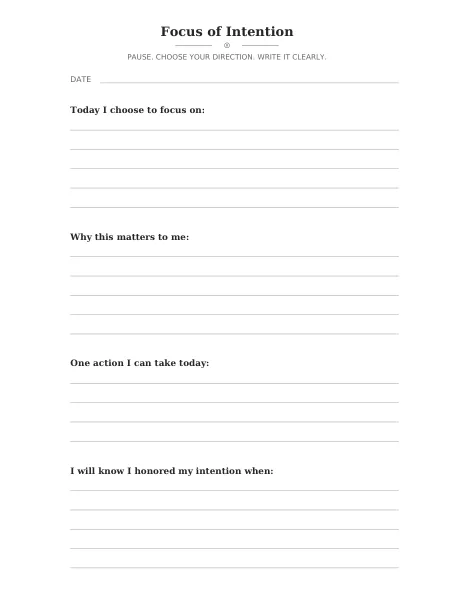
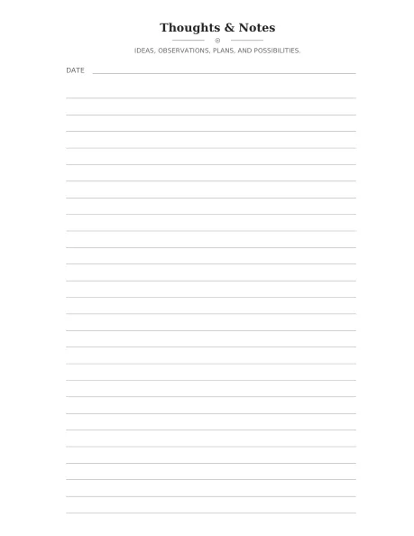
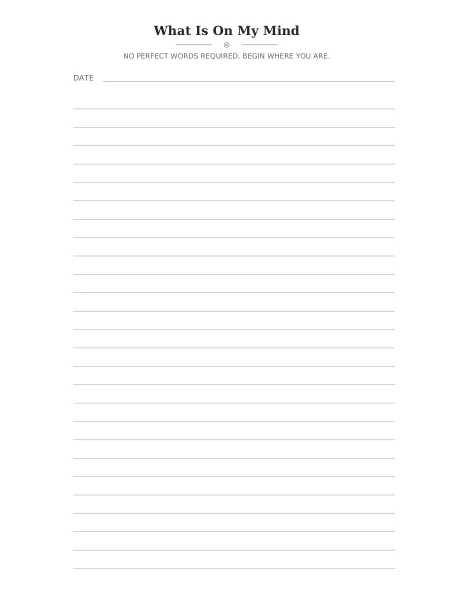
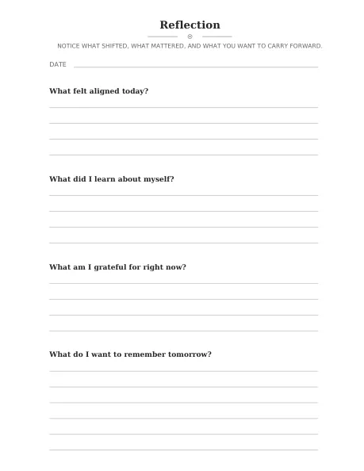

Thank you for shopping with Open Theory Cove. Download and save your journal so you can print more pages whenever you need them.
Pages included




How to print your pages
- Open the PDF and choose US Letter (8.5 × 11 inches), portrait, and Actual Size or 100%.
- Print pages 3–6 for the complete set, or choose individual pages. Page 1 is the optional cover and page 2 is the printing guide.
- Print single-sided for easy sorting. If the print preview shows clipped edges, choose Fit. Punch holes along the left edge to add the pages to your binder.